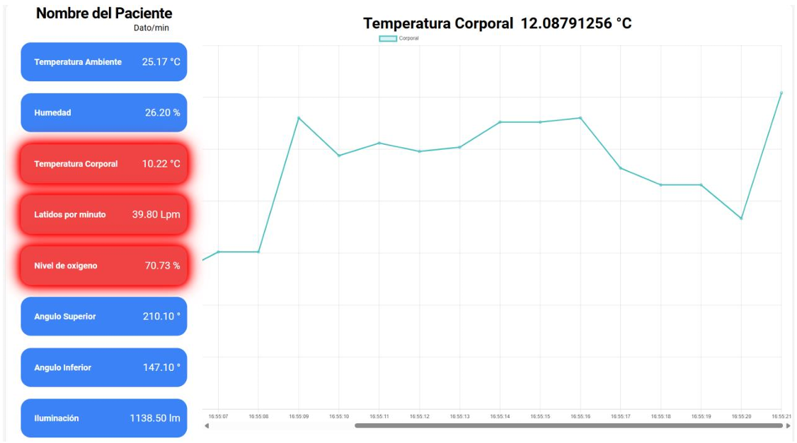
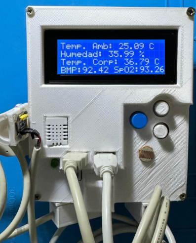
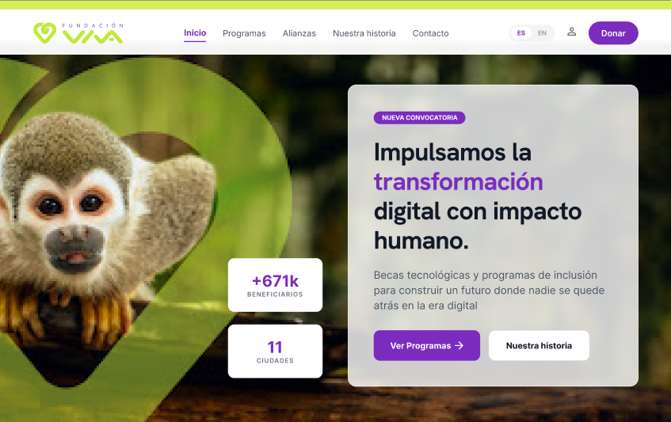
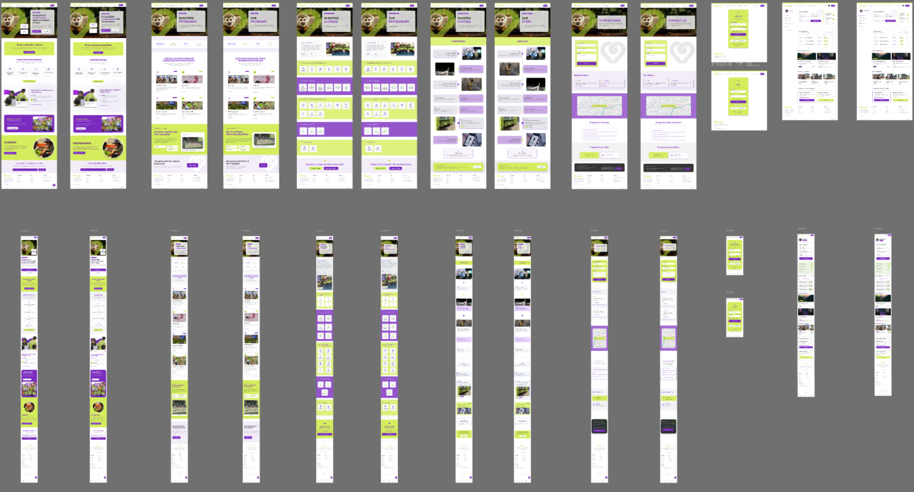
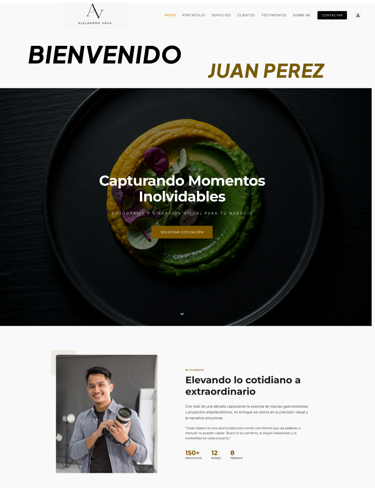
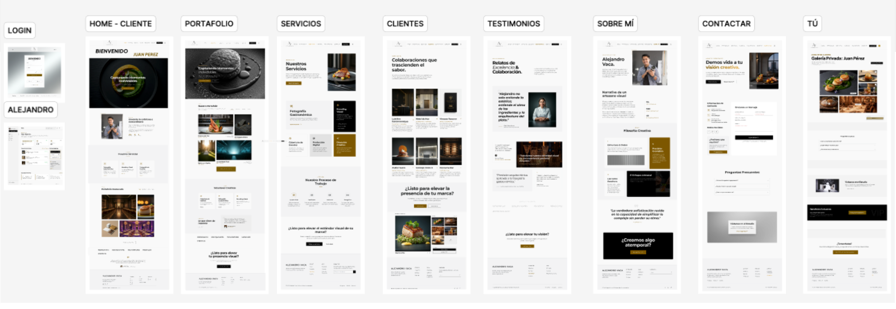

Explora el desglose técnico, metodologías y resultados de mis desarrollos más destacados.
Diseño de un sistema para cabeceras hospitalarias inteligentes capaz de monitorear signos vitales y variables ambientales en tiempo real, mejorando la respuesta médica.
En los centros de salud de Bolivia, el monitoreo constante de pacientes suele depender del personal de enfermería de forma periódica, lo que dificulta la detección de anomalías repentinas. Además, las variables ambientales de las salas no se miden integradamente con los signos del paciente.
Se diseñó una cabecera hospitalaria inteligente equipada con microcontroladores ESP32 que integran sensores de signos vitales (pulso, saturación de oxígeno, temperatura corporal) y sensores de entorno. Los datos se envían a un servidor central en tiempo real usando WebSockets.
1. Investigación & UX: Análisis de las necesidades del personal médico y
distribución de salas.
2. Hardware: Diseño de circuitos y PCB en Altium, optimizando el filtrado de ruido
en sensores biológicos.
3. Firmware & Backend: Programación del firmware en C++ (FreeRTOS) y desarrollo de
un servidor centralizado en Node.js para visualización y alertas instantáneas.

Reducción drástica del tiempo de alerta ante anomalías médicas y registro digital unificado de signos vitales.

Rediseño y mejora de la experiencia digital interactiva mediante metodologías UX/UI para potenciar la accesibilidad, el alcance y la usabilidad de sus iniciativas sociales.
La plataforma web y móvil anterior de la fundación presentaba dificultades de navegación para usuarios no técnicos y una baja conversión en el flujo de donaciones o consultas debido a interfaces sobrecargadas.
Se diseñó un flujo de usuario interactivo simplificado con una arquitectura de información clara, dándole prominencia a los proyectos sociales y haciendo el proceso de contacto extremadamente intuitivo.
1. Empatía: Realización de entrevistas a usuarios finales y creación de arquetipos
de personas.
2. Wireframes: Estructuración del sitio en baja fidelidad para validar la
navegación jerárquica.
3. Prototipado: Desarrollo del prototipo interactivo en Figma de alta fidelidad,
aplicando contrastes y accesibilidad Web (WCAG).

Aumento en la satisfacción de usuarios en pruebas de usabilidad y navegación fluida entre iniciativas.

Portafolio fotográfico profesional optimizado con animaciones sutiles y carga de imágenes eficiente, diseñado para reflejar la marca personal del fotógrafo.
Los fotógrafos profesionales necesitan exhibir galerías de imágenes de alta resolución sin comprometer los tiempos de carga en dispositivos móviles, un factor crítico para el SEO y la retención del cliente.
Creación de un portafolio web con carga perezosa (lazy-loading), optimización y reescalado dinámico de imágenes, estructurado sobre un diseño responsivo y elegante.
1. Diseño Visual: Mockup inicial en Figma enfocado en contrastes oscuros que
resalten la fotografía.
2. Código: Implementación del maquetado HTML semántico y estilos personalizados CSS
con transiciones fluidas.
3. Optimización: Compresión de recursos y scripts JavaScript nativos livianos para
la interactividad de la galería.

Puntuación sobresaliente en velocidad de carga y visualización impecable de las galerías.
